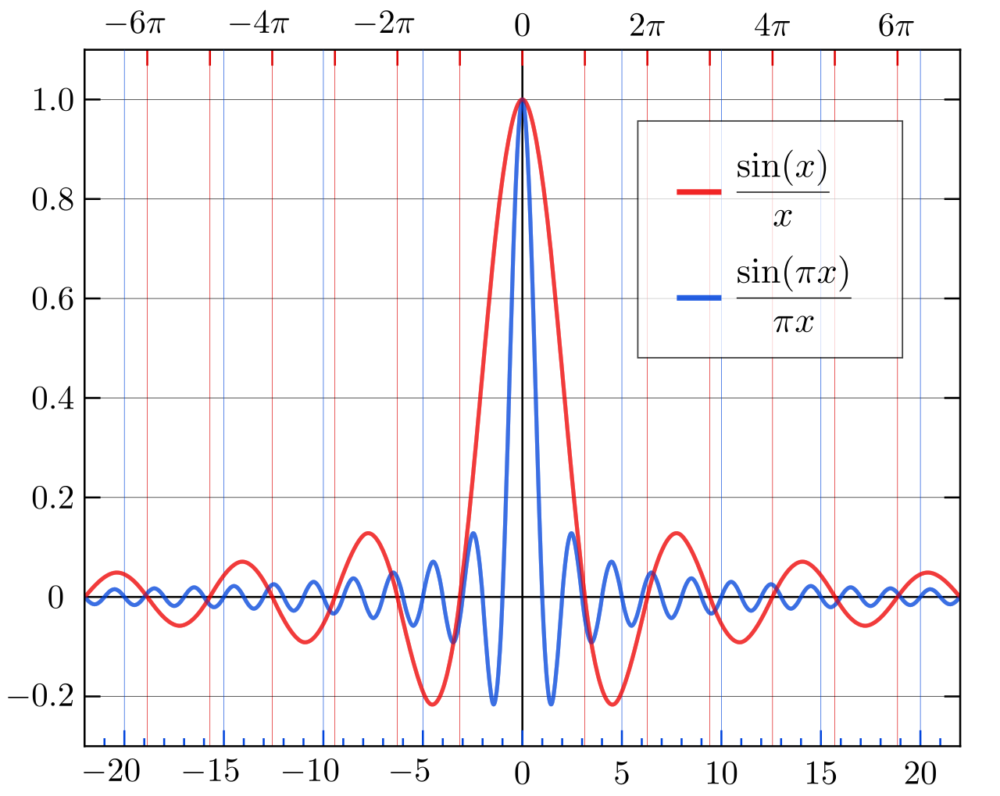

Комплексный ряд Фурье является разложением по ортонормированной системе функций $$..., e^{-2jt}, e^{-jt}, 1, e^{jt}, e^{2jt}, ...$$
На отрезке [-π, π] разложение имеет вид: $$f(t) = \sum_{k=-\infty}^{\infty}{C_k e^{jkt}}$$ $$C_k = \frac{1}{2\pi} \int_{-\pi}^{\pi}f(t)e^{-jkt}dt$$
На произвольном интервале [-T, T] разложение имеет вид: $$f(t) = \sum_{k=-\infty}^{\infty}{C_k e^{j \omega_0 kt}}$$ $$C_k = \frac{1}{T} \int_{-T/2}^{T/2}f(t)e^{-j \omega_0 kt}dt$$ $$\omega_0 = \frac {2\pi}{T}$$
Связь между комплексными и действительными коэффициентами разложения: $$C_k = \frac{1}{T} \int_{-T/2}^{T/2} f(t)(cos(\omega_0 kt) - j sin(\omega_0 kt))dt = \hspace{10mm}(формула \hspace{2mm} Эйлера)$$ $$ = \frac{1}{T} \int_{-T/2}^{T/2} f(t)(cos(\omega_0 kt))dt - \frac{j}{T} \int_{-T/2}^{T/2} f(t)(sin(\omega_0 kt))dt$$
При этом, $$ a_k = \frac {2}{T} \int_{-\frac{T}{2}}^{\frac{T}{2}} f(t) cos(\omega_0 kt) dt $$ $$ b_k = \frac {2}{T} \int_{-\frac{T}{2}}^{\frac{T}{2}} f(t) sin(\omega_0 kt) dt $$
Тогда, $$C_k = \frac{1}{2}(a_k - jb_k), k = 1, 2, ...$$ $$C_k = \frac{a_0}{2}, k = 0$$ $$C_k = \frac{1}{2}(a_k + jb_k), k = -1, -2, ...$$
Коэффициенты разложения являются комплексными числами. Модуль и аргумент коэффициентов разложения равны: $$|C_k| = \frac{\sqrt{a_k^2 + b_k^2}}{2} \hspace{10mm} - спектр \hspace{2mm} амплитуд$$ $$\angle C_k = arctg\frac{b_k}{a_k} \hspace{10mm} - спектр \hspace{2mm} фаз$$ $$|C_k|^2 \hspace{10mm} называется \hspace{2mm} спектром \hspace{2mm} мощности $$
Коэффициенты комплексного разложения в ряд Фурье обладают следующим свойством: $$C_{-k} = \bar{C_{k}}$$ а значит, спектр амплитуд и спектр мощности симметричны относительно k=0, а спектр фаз симметричен относительно начала отсчета.
Заметим, что если функция f(t) - чётная, то все мнимые составляющие разложения будут равны 0, а если нечётная - то все действительные (это следует из формулы Эйлера).
Разложим в комплексный ряд Фурье прямоуголный импульс: $$f(t) = 1, -1\leqslant t \leqslant1$$ $$f(t) = 0, t < -1 \hspace{2mm}или\hspace{2mm} t> 1$$ $$C_k = \frac{1}{T} \int_{-1}^{1}1 * e^{-j\omega_0kt} dt = \frac{1}{T} \frac{1}{-j\omega_0 k} e^{-j\omega_0kt}|_{-1}^{1} = \frac{1}{T} \frac{1}{-j\omega_0}k (e^{-jw_0k} - e^{j\omega_0k}) = \frac{2}{T}\frac{1}{\omega_0k}sin(\omega_0k), $$ $$k = \pm 1, \pm 2, \pm 3, ...$$
При k=0: $$C_0 = \frac{1}{T} \int_{-1}^{1} 1*dt = \frac{2}{T}$$
Коэффициенты разложения оказались действительными числами. Это ясно уже из того, что прямоугольный импульс - четная функция.
$$ C_k \sim \frac{sinx}{x}$$ Функция $$ f(x) = \frac{sinx}{x}$$ называется кардинальным синусом или функцией выборки единичного отсчета.
Комплексное разложение прямоугольного импульса
Теорема Парсеваля: мощность функции заключается в сумме мощностей гармоник $$ ||f(t)||^2 = \frac{1}{T}\int_{-\frac{T}{2}}^\frac{T}{2} |f(t)|^2dt = \sum_{k=-\infty}^{\infty}|C_k|^2$$
1. Масштабирование: увеличим амплитуду сигнала в a раз $$ C_k' = \frac{1}{T} \int_{-\frac{T}{2}}^{\frac{T}{2}}af(t)e^{-j\omega_0kt}dt = a\frac{1}{T}\int_{-\frac{T}{2}}^{\frac{T}{2}}f(t)e^{-j\omega_0kt}dt = aC_k$$ Все коэффициенты Фурье изменились в a раз. Спектр фаз остался без изменений.
2. Сложение двух сигналов: пусть f(t) представляет собой линейную комбинацию двух других функций $$ f(t) = a_1f_1(t) + a_2f_2(t)$$ $$ C_k' = \frac{1}{T} \int_{-\frac{T}{2}}^{\frac{T}{2}}(a_1f_1(t) + a_2f_2(t))e^{-j\omega_0kt}dt = a_1\frac{1}{T} \int_{-\frac{T}{2}}^{\frac{T}{2}}f_1(t)e^{-j\omega_0kt}dt + a_2\frac{1}{T} \int_{-\frac{T}{2}}^{\frac{T}{2}}f_2(t)e^{-j\omega_0kt}dt = a_1C_{1k} + a_2C_{2k}$$ Значит, преобразование Фурье линейно.
3. Сдвиг сигнала во времени: сдвинем f(t) по времени на τ $$ C_k' = \frac{1}{T} \int_{-\frac{T}{2}}^{\frac{T}{2}}f(t - \tau)e^{-j\omega_0kt}dt $$ Сделаем замену: $$u = t - \tau \Rightarrow dt = du;$$ $$ -\frac{T}{2} - \tau < u < \frac{T}{2} - \tau$$ $$ C_k' = \frac{1}{T} \int_{-\frac{T}{2} - \tau}^{\frac{T}{2} - \tau}f(u)e^{-j\omega_0k(u + \tau)}du = e^{-j\omega_0k\tau}\frac{1}{T} \int_{-\frac{T}{2} - \tau}^{\frac{T}{2} - \tau}f(u)e^{-j\omega_0ku}du = e^{-j\omega_0k\tau} C_k$$ Значит, $$ C_k' = e^{-j\omega_0k\tau} C_k$$ Получается, что $$|C_k'| = |e^{-j\omega_0k\tau}C_k| = |C_k|$$ Значит, при сдвиге по времени спектр фаз изменяется, а спектр амплитуд - нет.